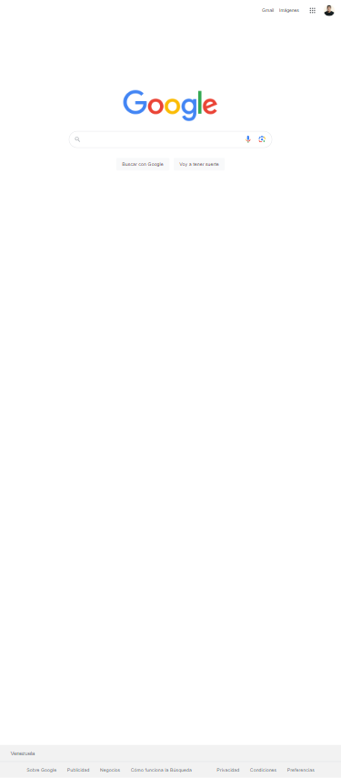

Design Principles Document
Diego Granados
Visual Hierarchy
Netflix
Netflix.comVisual hierarchy is the method of arranging graphic elements by order of importance. By relying on principles relating to size, color, contrast, white and more, you can influence how users interact with your designs, from images to websites.
Hick's Law
Platzi
Platzi.comThe law states that the more options you have, the longer it takes to make a decision. Consequently, reducing the number of choices makes the decision-making process easier and reduces users' response time
Fitts' Law

Fitts' law is widely applied in user experience (UX) and user interface (UI) design. For example, this law influenced the convention of making interactive buttons large (especially on finger-operated mobile devices)—smaller buttons are more difficult (and time-consuming) to click. Likewise, the distance between a user's task/attention area and the task-related button should be kept as short as possible.